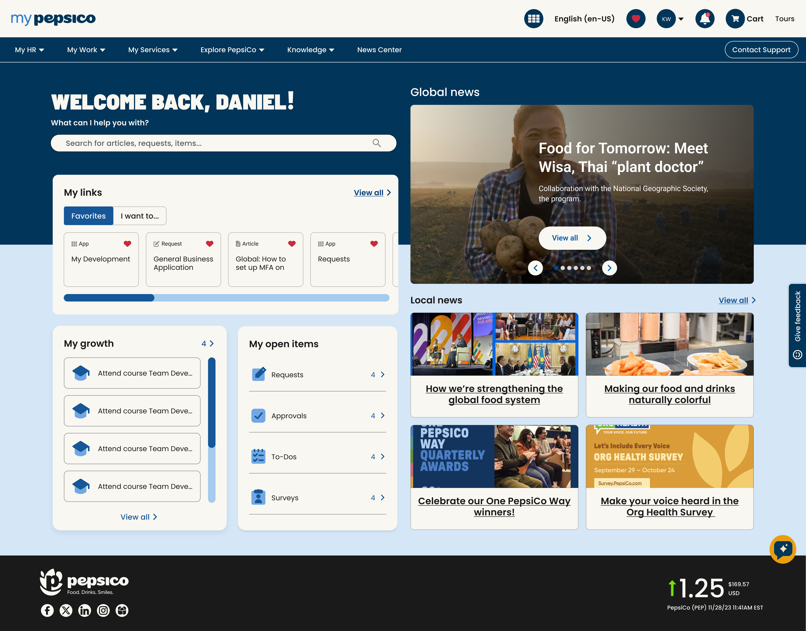

Problem
- The existing intranet experience was fragmented, difficult to navigate, and inconsistent across regions and platforms.
- Employees struggled to find relevant information, resulting in inefficient workflows and increased dependency on support channels.
- The lack of standardized design patterns and content structure made the platform difficult to scale and maintain.
My Role
Senior UX Designer leading key initiatives across the redesign of myPepsiCo.
- Led a team of designers and guided design direction across multiple workstreams
- Defined UX strategy, information architecture, and interaction patternsli>
- Partnered closely with product owners, engineers, and stakeholders
- Owned design quality from concept through implementation
Execution & Delivery as Scale
To ensure design quality and consistency at scale, I played a key role in bridging design and development throughout the Agile lifecycle.
- Owned the creation, review, and approval of 30+ user stories per sprint, ensuring each story clearly translated design intent into actionable requirements for engineering teams
- Established a structured review process to maintain quality and completeness, identifying gaps and guiding teams on how to resolve them
- Acted as the primary point of contact for developers, answering questions, clarifying requirements, and unblocking progress in real time
- Raised and tracked bugs during implementation, ensuring alignment between final delivery and Figma designs
- Provided detailed feedback and documentation in Azure DevOps (ADO), improving communication and reducing iteration cycles
This approach ensured that designs were not only delivered, but implemented accurately and consistently across a complex enterprise system.
Key Decisions
- Used Card Sorting to redefine navigation structure, aligning with users mental models across regions
- Prioritized simplification of workflows over feature expansion to reduce cognitive load
- Designed role based experiences (Frontline, Desk employees and Managers) to reflect different access levels and needs
- Balanced platform constraints (ServiceNow) with usability improvements
Impact
- Reduced click path to key information from 14+ steps to 6
- Improved findability and navigation efficiency across global users
- Enabled scalable design through a unified design system
- Improved alignment between design and development, reducing implementation inconsistencies
What I Learned
Designing for enterprise systems requires balancing user needs, technical constraints, and business priorities. Success depends not only on strong UX thinking, but on the ability to align cross-functional teams and drive execution at scale.
Final product
Due to company confidentiality, I’m only able to share a limited selection of images and high level details from this project.
